Electromyography (EMG)
This week for sensors I wanted to build an electromyogram (EMG) to sense muscle activation. Inspired by CTRL-labs BCI that does high precision muscle sensing to preemptively determine how your hand will move, I thought an EMG would be a good start in learning how this worked. Muscles are activated through neuronal signaling, which is electrical. By attaching electrodes to two points of a muscle and amplifying the signal, you fill find a differential in electrical potential that changes with muscle contraction. The differential is very small so it must be amplified and smoothed in order to get good results.
I found an instructables with directions for creating an EMG. Though I didn’t have nearly all of the parts for this project, I thought it would be a good exercise in learning more about some of the circuit components by building them from constituent parts that I did have.
This guide required two chips that I did not have:
- INA106: a differential amplifier
- TL072: a dual op-amp chip
The only op amp I could find in the lab was the OP80 which is a single op-amp. I found after a few Google searches that it is very feasible to make a differential amplifier from an op-amp. One problem with this approach is Given that the project required 1 INA106 and 3 TL072s, I would need 7 OP80s!! This was going to take up a lot of space on the board.
To get more familiar with operational amplifiers, I tried to get a simple circuit that amplified voltage from the ItsyBitsy.
Op Amps
I found this helpful guide for op-amps. I followed it to make a non-inverting and inverting amplifier to get used to all of the pins involved with the OP80 chip, and working with a power supply in addition to input and output voltage.
Initially, I tried using one 9V battery with a voltage divider to make a “virtual ground” that would mimic having two batteries, one positive and one negative. I was unable to figure out the correct configuration. I couldn’t use 2 9V batteries, however, because the OP80 chip had a maximum supply voltage rating of $\pm 8V$. Instead I decided to use 2 of the 5V USB power supplies. To do this, I found two USB cables, cut off the MicroUSB adapter end and stripped the cable. Inside I found 4 colored wires. Online I found that these colors meant the following:
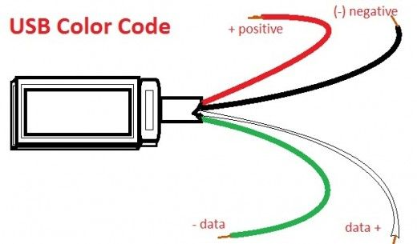
I soldered extension wires onto the positive and negative ends and clipped the extra length of the data wires:
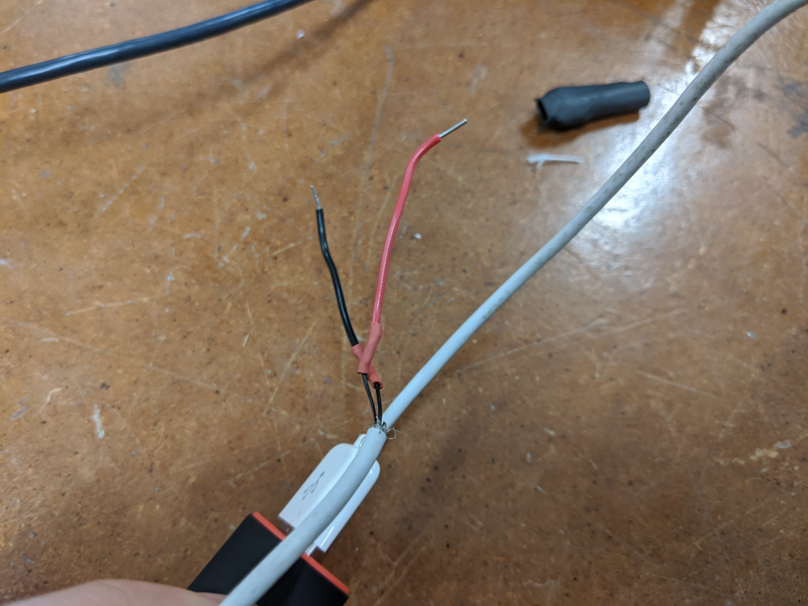
With two of these in place, I attached the positive terminal of one to the negative terminal of the other. This connection would serve as my ground, and the two other terminals would be at $\pm 5V$ relative to ground. This positive and negative split relative to ground was crucial to the functioning of the op-amp.
Inverting Amplifier
Using the guide linked above I first created an inverting amplifier.
As the name suggests, this circuit inverts the sign of the input voltage and multiplies it by a number $G$ that is determined by the ratio of the resistors in the diagram below:
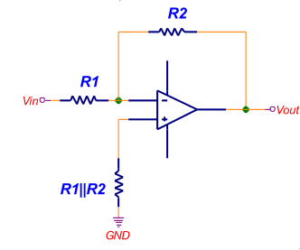
The formula here is $V_{out}=-V_{in} (R_2/R_1)$.
I used the analog pin to deliver a small amount of voltage (0.10V) as $V_{in}$ and measured both this quantity and $V_{out}$ relative to ground. The images below show these two quantities.
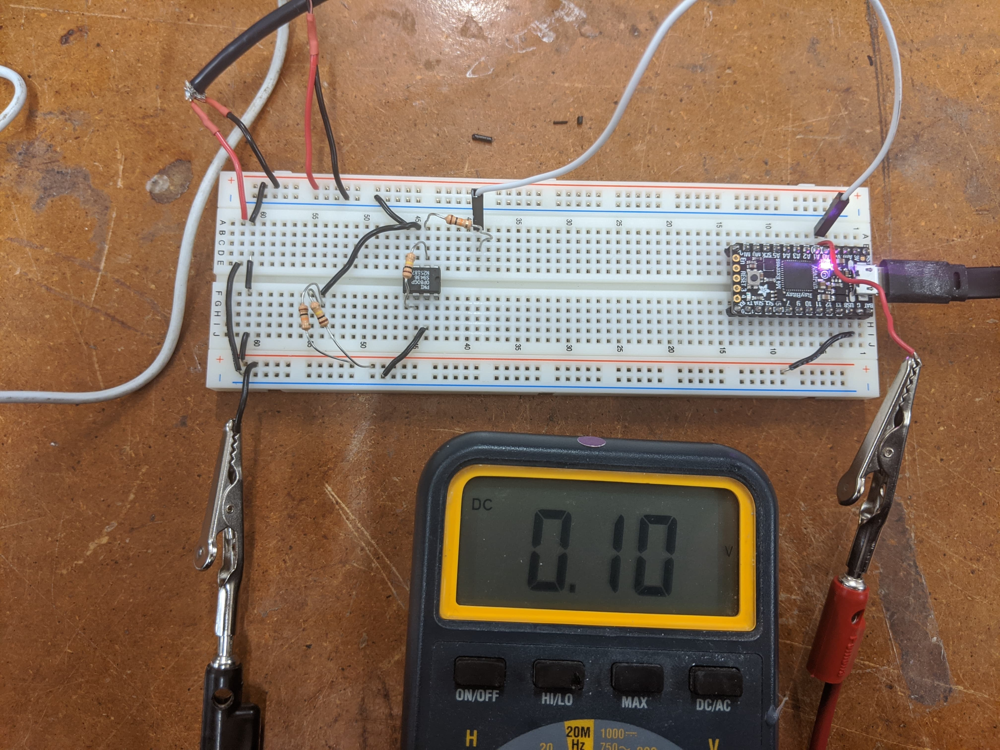 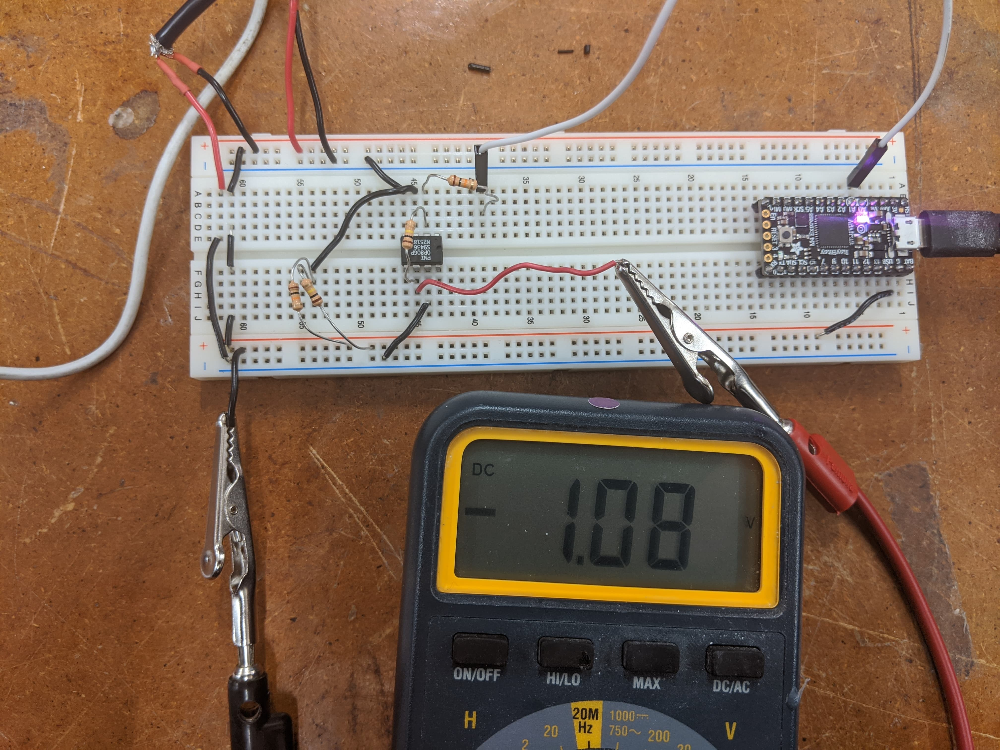
I used a $10k \Omega$ resistor before $In_{-}$ and a $100k \Omega$ resistor connecting that to the output. This resulted in a theoretical gain of $-10V$. The readings showed a gain of $-10.8V$, pretty close!
Noninverting Amplifier
Next I tried making a noninverting amplifier, which is similar to the previous example but does not change the sign of the voltage. The diagram is shown here:
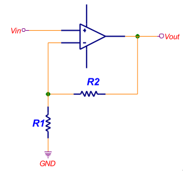
The formula for $V_{out}$ here is $V_{out}=V_{in} (1 + R_2/R_1)$. I again constructed the circuit and measured both these quantities with $V_{in}=0.10V$:
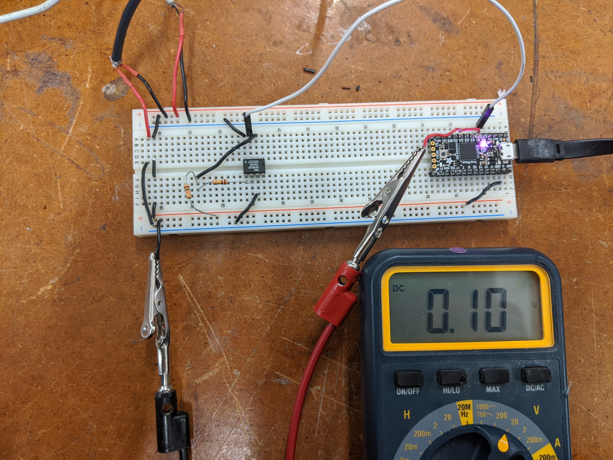 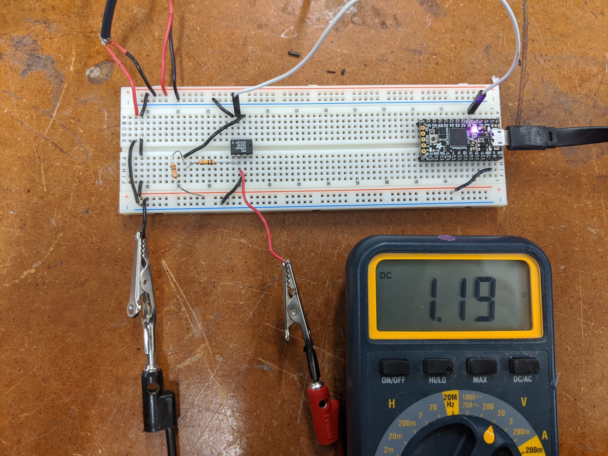
The theoretical output voltage should be 1.1V in this case and I measured $1.19V$. Because both of these voltages were higher than expected there could be something I’m not accounting for in the way I’ve set up my circuit, or my measurement for input voltage didn’t show some hanging decimal that influenced these results after the multiplier.
Differential Amplifiers and EMG
After becoming comfortable with these parts and how they work, I was ready to start assembling. Going back to the instructables site, I started the step by step assembly process they outlined. It was difficult to follow this guide and I had to do many adaptations because I lacked the Op-Amps they had. I also had to substitute things like their $150k \Omega$ resistors for $100k \Omega$ and $47k \Omega$ resistors in series. The resulting circuit is here:
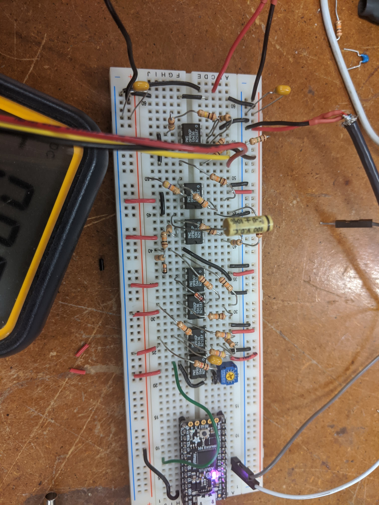
Each of the op80 chips does something different. The black, yellow and red wires are the sensor input. Starting from the top down the op80 chips doe the following:
- Differential amplification - find difference between electrodes and amplify with $G=-110$
- Inverting amplification - restores the positive sign and amplifies with $G=14.7$
- High pass filter - AC couples the signal and removes DC offset/low frequency noise
- Full-wave rectifier - takes the absolute value of the signal
- Part of 4.
- Low pass filter - Converts AC signal back to DC, also inverts the signal
- Variable inverting amplifier - Uses a potentiometer as variable resistor for controlled amplification and inversion back to positive voltage
While I measured everything with a voltmeter and it worked as expected, I found the results were just as good with the much simpler circuit here:
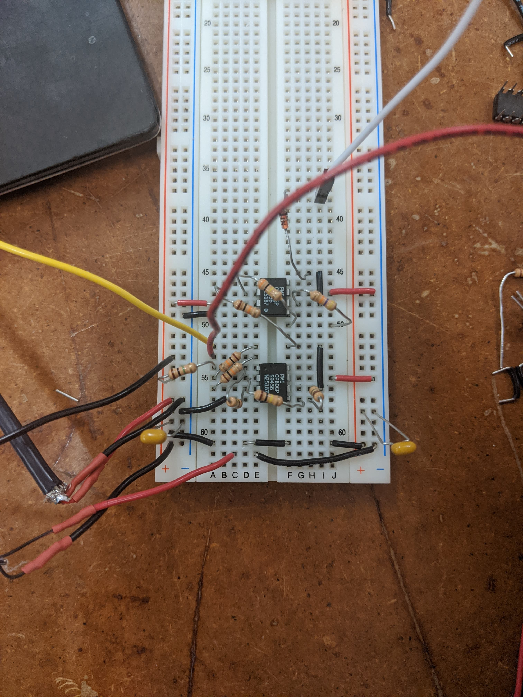
This circuit is the same as the above but just takes the differential at the electrodes and amplifies with $G=1617$. To finally measure the voltage difference across one of my muscles, I needed to make electrodes.
I first made a little nub to attach an alligator clip to. I made this (very hackily) from AAA battery holders.
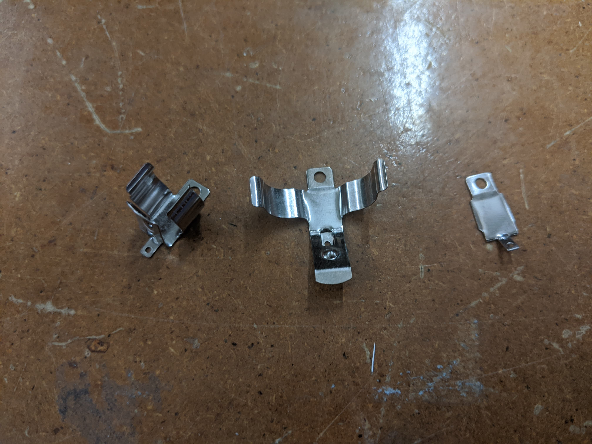
With some scotch tape, I had an electrode:
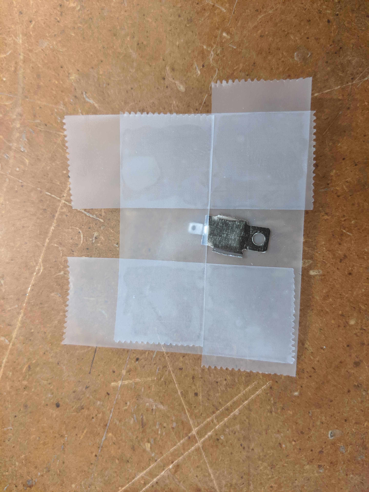
To connect this to the circuit, I planned to use alligator clips. I first crimped alligator clips onto wire that I’d stripped:
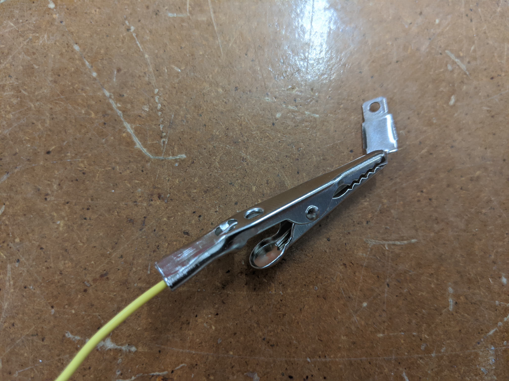
After wiping my arms with sanitary wipes (said on many sites to improve readings), I connected the circuit to my bicep:
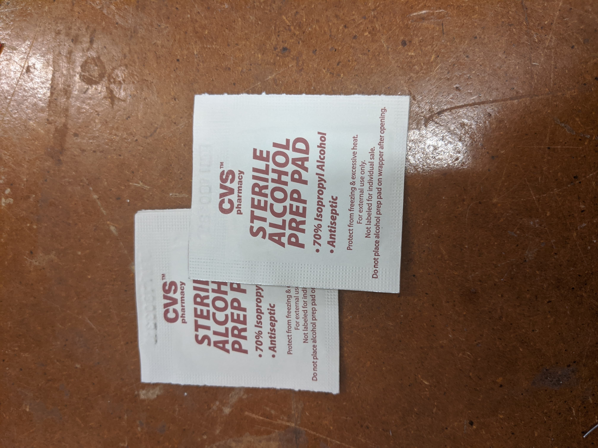
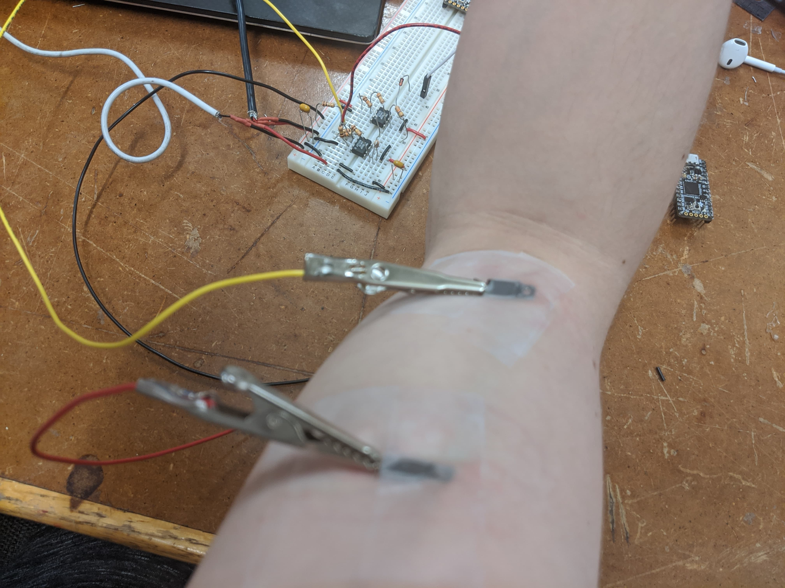
Unfortunately, the reading was much too noisy to indicate any difference when I flexed vs not. Because directly injecting voltage into the sensor inputs from the microcontroller resulted in proper amplification, I concluded this was an issue with my sensors. With proper electrodes, I hope to get this circuit working.
Force Sensor
After my lengthy failed attempt at EMG sensing, I created a simpler force sensor using capacitors:
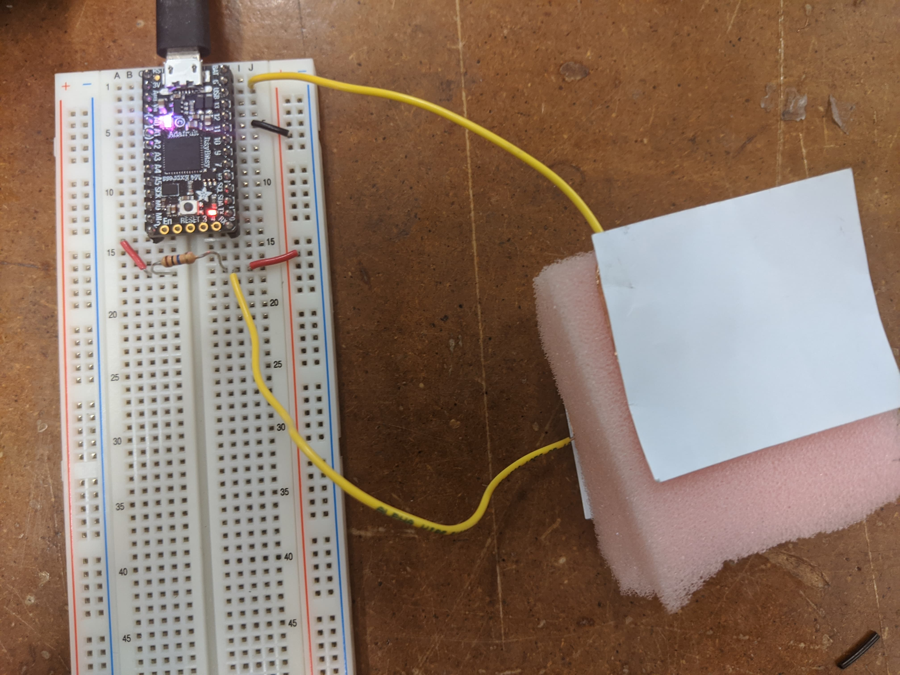
In this circuit, foam separates two capacitative plates. Charge builds up on the lower plate. The closer the two plates are, the more current that can flow through them. This draw on current decreases the current flowing to the input pin allowing us to sense how close the two are.
The readings from the input pin at first had no meaning, so I calibrated them. For calibration, I added a loop to my setup code:
void setup() {
Serial.begin(9600);
// turn on LED to signal the start of the calibration period:
pinMode(13, OUTPUT);
digitalWrite(13, HIGH);
// calibrate during the first five seconds
while (millis() < 5000) {
sensorValue = Sensor.capacitiveSensor(100);
// record the maximum sensor value
if (sensorValue > sensorMax) {
sensorMax = sensorValue;
}
// record the minimum sensor value
if (sensorValue < sensorMin) {
sensorMin = sensorValue;
}
}
// signal the end of the calibration period
digitalWrite(13, LOW);
}
This loop gives 5 seconds where the sensor reads values from the sensor and sets a max and min value accordingly. In the loop body of my program, input measures of the capacitive sensor are scaled and clipped to this range:
void loop() {
long sensorValue = Sensor.capacitiveSensor(10); //Change the number of samples to get the required timing and sensitivity.
sensorValue = map(sensorValue, sensorMin, sensorMax, 0, 255);
sensorValue = constrain(sensorValue, 0, 255);
analogWrite(13, sensorValue);
delay(10);
Serial.println(sensorValue);
}
I output to the serial monitor and then copied this output to a text file to parse in python and graph:
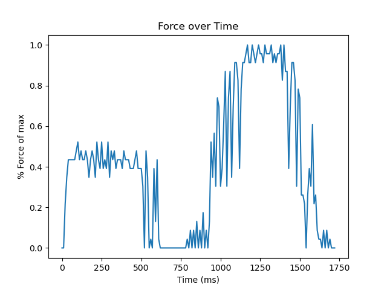
This plot shows the calibrated force voltage reading over time as I first press lightly and then press all the way down on the top capacitative plate.
Temperature Sensor
The second sensor I built was the temperature sensor. Using a thermistor, which changes resistance with temperature, I was able to calculate the ambient temperature of the room. The circuit I built was as follows:
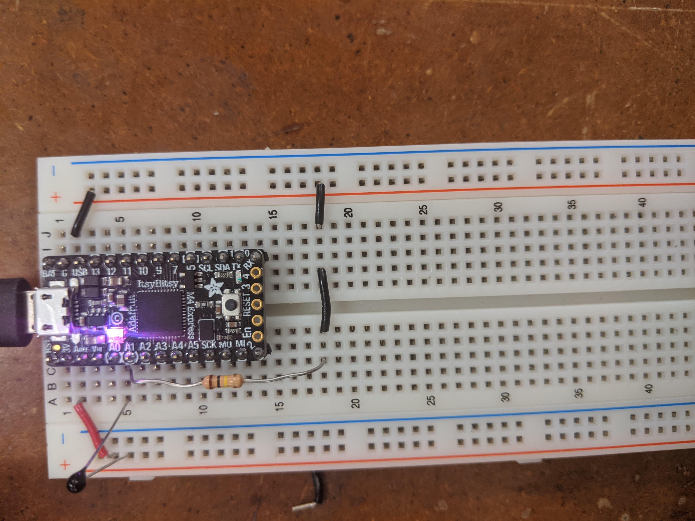
The black component on the bottom is the thermistor and is connected to the 3.3V pin and to ground via a resistor. Voltage was read through the A0 pin (though it looks like A1 in the image).
int inputPin = A0;
int voltageReading;
float R1 = 100000;
float thermR;
float logThermR, T;
float c1 = 1.009249522e-03, c2 = 2.378405444e-04, c3 = 2.019202697e-07;
void loop() {
voltageReading = analogRead(inputPin);
thermR = R1 * (1023.0 / (float) voltageReading - 1.0);
logThermR = log(thermR);
T = (1.0 / (c1 + c2*logThermR + c3*logThermR*logThermR*logThermR));
T = T - 273.15;
T = (T * 9.0) / 5.0 + 32.0;
Serial.println(T);
delay(500);
}
I first calculate the resistance through the thermistor using the iother resistor and the voltage reading. Using constants taken from this Arduino thermistor tutorial, I was able to devise a formula for the temperature in terms of the thermistor’s resistance and then convert this value to Fahrenheit. I again output this to the serial monitor and plotted the results:
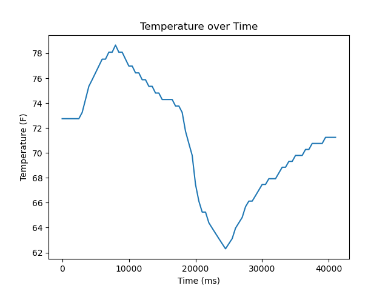
In order to test it was working, while plotting, I first grabbed the thermistor which increased the temperature because I was warmer than the ambient temperature. There was a bottle of compressed air lying around so I also sprayed this at the thermistor which made it much cooler. Doing these two things in succession resulted in the graph shown. If I had an accurate way of measuring temperature, e.g. a thermometer, I could have better calibrated this sensor as well like in the previous example.
Conclusion
Though my EMG project did not work in the end, I learned more about circuitry from this attempt than the sum of my knowledge up to this point. I feel much more comfortable with a multimeter and oscilloscope, have memorized several resistor color code patterns, and have become a pro at wire stripping. It was cool and fun to come up with makeshift replacements for parts I did not have from the tutorial, including the electrodes. This first iteration did not discourage me but got me really excited about electronics. I feel much more comfortable and fluent in electronics terms as well now having learned about so many of the circuit components.